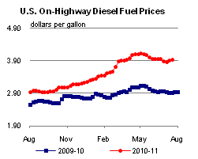

Released: July 20, 2011
Next Release: July 27, 2011
Middle East Demand
Some market participants have expressed concern that any increase in crude supply as may be forthcoming from Saudi Arabia and other producers this summer may be partly, or even fully, absorbed by seasonal increases in their own domestic demand, compounding the impact of robust trend consumption growth in those economies. Those concerns are understandable, given the magnitude of estimated summer demand swings in the Middle East, especially in recent years. However, there is no clear evidence that past summer spikes in Middle East demand, have come at the expense of exports. The view that seasonal swings in domestic demand can only be satisfied at the cost of reduced exports ignores inventory changes, an assumption that seems simplistic.
According to the International Energy Agency (IEA), Middle Eastern oil demand grew by 2.5 million barrels per day (bbl/d) from 2001 to 2010, roughly the same as all emerging Asian countries except China. In percentage terms, Middle East oil demand expanded by nearly 50% over that decade, second only to China's 94% growth, and accounted for one fourth of world demand growth. Two countries dominate the region by the size of their domestic oil market: Saudi Arabia, which accounted for roughly 34% of regional demand in 2010, and Iran, 27% (the former's share is likely rising and the latter's declining).
A convergence of factors accounts for the strength of Middle Eastern demand growth. First, rising oil prices have brought the region's main oil producers an export windfall in the last decade, propelling strong economic growth. The region's population is also the world's youngest, with explosive growth rates. In the last few years, fast rising incomes and housing demand have fueled a spectacular construction boom in parts of the region. Last but not least, subsidization keeps energy cheap for consumers, fostering a perception of cheap oil as an entitlement. Only Iran recently won kudos from the International Monetary Fund for de-subsidizing oil prices, a praise admittedly based on unaudited official data. Current unrest in parts of the Middle East and North Africa is more likely to postpone other attempts at de-subsidization, as subsidy cuts can be a source of contention and protests in countries that attempt them.
As Middle Eastern oil demand has grown, its seasonal cycles have become clearer. Nowhere has this been more apparent than in Saudi Arabia. Monthly consumption data published under the Joint Organisations Data Initiative (JODI) shows Saudi oil demand has a winter trough, usually in January or February, and a summer peak, typically in late summer. As Saudi demand has grown in recent years, so has the magnitude of that seasonal swing. In 2005, the gap between a low consumption point of 1.1 million bbl/d and a high of 1.5 million bbl/d was 370,000 bbl/d. By 2009, that seasonal gap had more than doubled, from 1.5 million bbl/d to 2.4 million bbl/d. In 2010, at 815,000 bbl/d, the gap remained wide by historical standards, even as yearly consumption continued on a steep growth path. Elsewhere in the region, Kuwait also exhibits strong demand seasonality, though official data suggest the country's overall demand growth is slower and seasonal patterns are steadier.
What accounts for the Saudi seasonal demand swing? Breaking down monthly demand by key product category sheds some light on this question. Neither liquefied petroleum gas, gasoline, nor jet fuel/kerosene shows any significant cyclical demand growth in summer; in fact, demand for both LPG and jet fuel/kerosene peaks in winter. Three other categories account for all summer demand growth: middle distillates (gas/diesel oil), residual fuel oil, and a third category made up of other products and crude oil used for direct burning - all mostly boiler fuels used in thermal power generating units. Estimates for the last category are implied numbers - the difference between "total products" demand and the sum of demand for all main products (LPG, gasoline, jet fuel/kerosene, gas/diesel oil and residual fuel oil) - rather than reported measurements. Seasonal shifts in demand in all three categories seem to reflect the underlying seasonality of air-conditioning demand. Since 2002, the swing in reported Saudi gas/diesel oil demand (from trough to peak) ranged widely, from 90,000 bbl/d in 2002 to 445,000 bbl/d in 2010. In residual fuel oil, the swing in demand widened from 90,000 bbl/d in 2002 to 260,000 bbl/d in 2008, but subsequently narrowed back to 90,000 bbl/d in 2010, presumably as Saudi Arabia phased out the use of residual fuel oil as boiler fuel. The swing in other products and implied direct crude burn is by far the widest, averaging 370,000 bbl/d during 2006-2010, from 130,000-150,000 bb/d in 2002-2005 to 620,000-640,000 bbl/d in 2009-2010. This growth is the main reason why many market participants are worried that rising summer domestic requirements might absorb this year's Saudi production increase and result in few extra Saudi barrels on international markets.
Production and inventory changes, along with exports, are the other components of the Saudi oil balance. Production estimates by the IEA and others do not show any seasonal variation in Saudi crude or natural gas liquid production. Saudi Arabia's own data on crude and product exports reported to the JODI do show some seasonality in exports, but there is no indication that the increasing seasonal swing in summer internal demand has caused the seasonal swing in crude and product exports to widen in recent years. On average, in the last five years, both crude and product exports bottomed out in August, during the peak domestic demand season. Average exports peaked in January for crude and February for products, with average swings of 590,000 bbl/d and 135,000 bbl/d, respectively, between peak and trough.
A review of other countries' data provides additional insights. Among OECD member countries, only Japan shows a marked summer dip in Saudi imports. But that seasonal pattern closely tracks the underlying seasonality of Japanese oil demand, which shows strongly defined winter peaks. Japan's oil demand seasonality is a remarkably close mirror image of Saudi Arabia's own seasonal demand cycle. Customs receipts for non-OECD member countries collected by the Global Trade Information Service also fail to reveal any seasonal variation in Saudi crude cargo arrivals. This suggests that Saudi Arabia, the world's largest crude exporter, successfully utilizes its proprietary tanker fleet and ample crude storage capacity, both within the Kingdom and closer to export markets in East Asia, Europe, South Africa and the Caribbean, to manage the seasonality of its internal demand and its effect on crude export availability and deliveries. Available statistics fail to fully capture the complexity of the scheduling and logistical arrangements, including crude prepositioning near export markets, entailed by exports on such a large scale. Whether Saudi demand for direct crude burn is as high as some analysts suggest is also far from clear. JODI data do not specifically break out direct crude burn as a category and are less than transparent on the matter. Although it is possible to try and strip "other products" from the estimate of direct Saudi crude burn (by subtracting crude runs, net exports and stock changes from crude production estimates), all methods of calculation yield implied numbers rather than observed volumes. The more elaborate the method of calculation, the more likely it is to compound the underlying uncertainties in each of the underlying data series. Although there are anecdotal reports of increased Saudi crude burn for power generation in the summer months, it seems somewhat doubtful that Saudi power plants have the dedicated crude storage capacity required to accommodate such massive swings in inputs as some estimates would suggest. Much of the base load, as well as the seasonal variation, in power generation demand is still met with products, particularly distillate, likely supplemented by small amounts of condensate.
The fact that Saudi Arabia was in the past able to weather seasonal spikes in air conditioning demand without significant adjustment to its exports is of course no guarantee that it will do so this year, when the challenge is not only to meet what could be new highs in domestic demand, but also to make good on a pledge to steeply boost crude production and help offset continued disruption in Libya. Also, however overstated market concerns about short-term Saudi crude availability may be, there is no doubt that reconciling the twin goals of supplying world markets and sustaining its own economic growth will be a growing challenge for Saudi Arabia in the longer run.
What current market concerns illustrate most of all is the glaring need for more non-OECD oil data. Despite remarkable progress toward greater transparency in Saudi Arabia and elsewhere, the shift in oil market growth from the OECD to non-OECD countries has left large gaps in supply, demand and inventory statistics. The need for more detailed non-OECD oil statistics is more apparent than ever at times of heightened market uncertainty, such as we are currently experiencing.
Gasoline price increases for the third straight week; diesel prices up two consecutive weeks
The U.S. average retail price of regular gasoline continues to increase in the month of July, adding just over four cents to reach $3.68 per gallon for the third consecutive week. The average price is $0.96 per gallon higher than last year at this time. The largest regional jump occurred on the Gulf Coast, where prices were up almost seven cents on the week. The gasoline average on the East Coast rose almost six cents, followed by a gain of two cents in the Midwest. The Rocky Mountain saw price was up just over a penny versus last week. The West Coast increased almost two cents and is still the highest regional price at $3.75 per gallon.
The national average diesel price added a little more than two cents this week, rising to $3.92 per gallon. The diesel price is $1.02 per gallon higher than last year at this time. The East Coast tallied the largest increase at almost four cents per gallon. The Gulf Coast and Midwest regions had similar price movements with increases of about three cents in each region. Moving west, prices reversed direction. The diesel price in the Rocky Mountains decreased just over a penny while the West Coast average moved down less than a penny.
Propane stocks increase but still below last year
Although total U.S. inventories of propane grew by 2.0 million barrels last week to end at 46.6 million barrels, stocks are 5.9 million barrels or 11 percent lower than last year at this time. Stocks have remained either near or below the lower boundary of the average range since the end of the heating season in March. The largest build occurred in the Gulf Coast region with 1.7 million barrels of new inventory. The Midwest region gained 1.0 million barrels, while the Rocky Mountain/West Coast region added 0.1 million barrels. The East Coast regional propane inventories dropped by 0.8 million barrels. Propylene non-fuel use inventories represented 5.8 percent of total propane inventories.
Text from the previous editions of This Week In Petroleum is accessible through a link at the top right-hand corner of this page.
|  | |||||||
| Retail Data | Changes From | Retail Data | Changes From | ||||
| 07/18/11 | Week | Year | 07/18/11 | Week | Year | ||
| Gasoline | 3.682 | Diesel Fuel | 3.923 | ||||
|
|||||||||||||||||||||||||||
| *Note: Crude Oil Price in Dollars per Barrel. | |||||||||||||||||||||||||||
| Stocks Data | Changes From | Stocks Data | Changes From | ||||
| 07/15/11 | Week | Year | 07/15/11 | Week | Year | ||
| Crude Oil | 351.7 | Distillate | 148.5 | ||||
| Gasoline | 212.5 | Propane | 46.601 | ||||